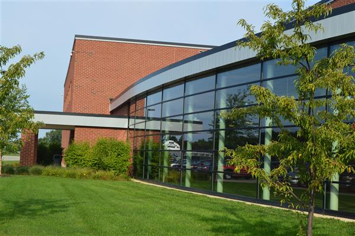

About Us
The Lakewood Video Game Club is a club created by students for students. We operate with the help of Mr. Smith, our teacher Advisor, as well as Jaegar Stank, the Student Advisor.
The LVGC is Official through two Esports organizations, those being the High School Esports League(HSEL) and State CHAMPS Esports. We do not currently have any competitive teams, but in 2019, our plans are to luanch our first competitive League of Legends team.
History
There isn't much history yet, started at the end of the 2017-2018 school year by Josh Cronk and Jaegar Stank, The LVGC's(Lakewood Video Game Club) mission is to be a outlet for students interested in gaming to show and explore their skills.
In December of 2018, the LVGC hosted its first event, a Super Smash Bros. Ultimate Tournament, in the band room.